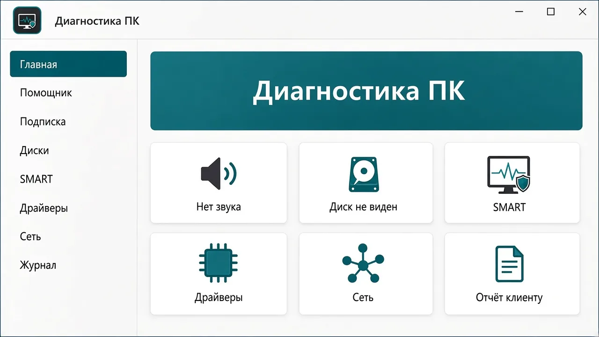
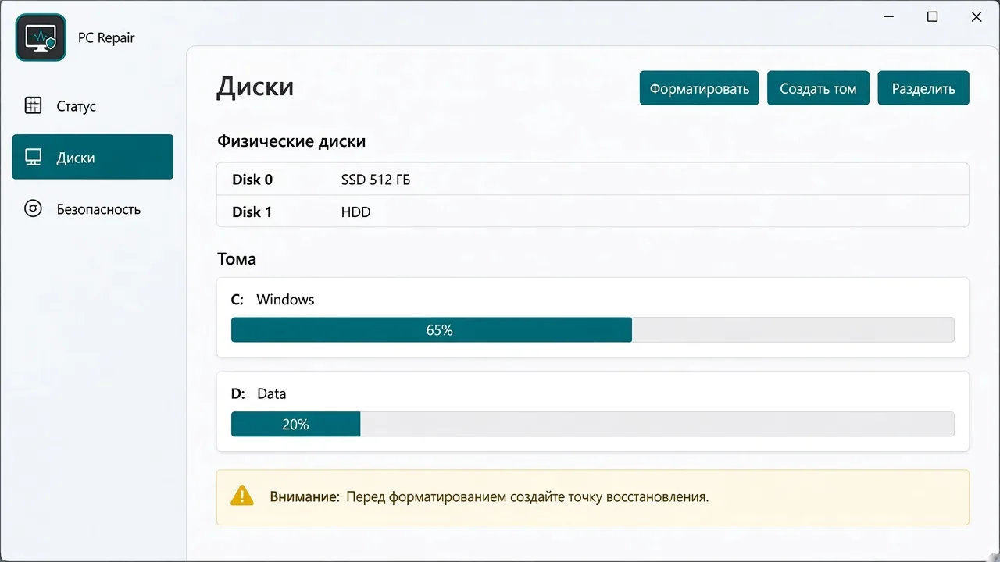
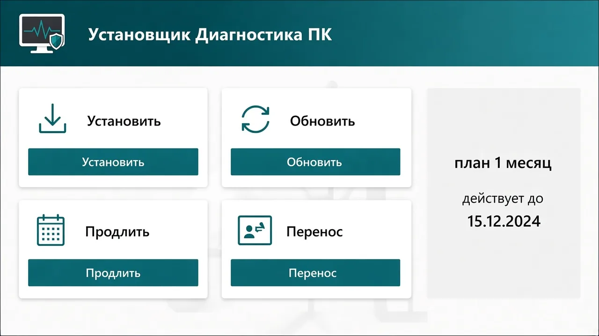

Проверка ПК
Один запуск собирает проверки вместе, сохраняет историю и показывает оценку результата.
Одна проверка покажет состояние дисков, драйверов, служб, температур и сети — и сохранит историю с оценкой результата.
Кнопка «Скачать» открывает страницу последней версии. Ключ выдаётся на выбранный срок. Бессрочного тарифа нет.
Возможности
«Диагностика ПК» собирает проверки Windows 10 и 11 в одном окне. Версия на этой странице — 1.3.0, интерфейс на WinUI 3.
Один запуск собирает проверки вместе, сохраняет историю и показывает оценку результата.
Смотрит показатели здоровья накопителей, которые отдаёт SMART.
Показывает сведения о драйверах устройств.
Список служб Windows и их состояние, чтобы заметить остановленные.
Считывает температуры с датчиков, которые удалось прочитать.
Проверяет, как компьютер видит сетевое подключение и есть ли связь.
Общий осмотр системы рядом с отдельными проверками дисков, служб и сети.
Действия для типичных неполадок, которые программа умеет запускать сама.
Сохраняет результат проверки, чтобы отправить его или сравнить позже.
Экран
Главное окно, раздел дисков и установщик.



Лицензия
Платный доступ — это ключ на срок, привязанный к одному компьютеру. Оплата на Boosty. Бессрочного тарифа нет. Дольше срок — ниже цена месяца, год выгоднее всего.
149 ₽
149 ₽ в месяц
Выгодно
399 ₽
133 ₽ в месяц
Экономия 48 ₽ к трём оплатам по месяцу
Выгоднее всего
1 190 ₽
около 99 ₽ в месяц
Экономия 598 ₽ за год
Промокод
Код вводят в программе, не на этом сайте. Он длинный: скопируйте его целиком, например PCDP1-XXXX-XXXX-…
Раздел «Подписка» → поле «Промокод» → «Активировать»
Коды публикуют на Boosty и в Дзене.
Смотреть коды на BoostyКлюч
Пять шагов. Код ПК берётся уже после установки, в разделе «Лицензия».
Скачайте «Диагностику ПК» и установите её на компьютер, который будете проверять. Скачать для Windows
Код нужен, чтобы ключ привязался к этому компьютеру. Без него автор не выпустит ключ.
Выберите 1 месяц, 3 месяца или 1 год в блоке цен. Перейти на Boosty
Напишите автору код из раздела «Лицензия» и какой срок оплатили.
Ключ придёт ответом на Boosty. Вставьте его в том же разделе «Лицензия».
Ключ работает только на том ПК, для которого вы отправили код. На другой компьютер тот же ключ не встанет. Чтобы перенести доступ, напишите автору на Boosty — сами вы перенос не сделаете. Подробная инструкция
Система
Вопросы
Диагностика ПК читает сведения о компьютере — диски, драйверы, службы, температуры, сеть — и показывает результат на экране. Это программа проверки, а не антивирус: она не обещает удалить вирусы и не заменяет резервную копию. Скачивайте установщик только кнопкой «Скачать» на этой странице. Перед установкой Windows может показать окно контроля учётных записей: так система спрашивает разрешение.
Нужна Windows 10 или Windows 11. Программа собрана на WinUI 3 под эти системы. Более старые версии Windows не поддерживаются.
Ключ работает до конца оплаченного срока и только на том компьютере, для которого вы его получили. Когда срок заканчивается, этот ключ больше не открывает доступ. Чтобы продолжить, выберите новый срок на Boosty и снова пришлите код ПК из раздела «Лицензия». Что программа позволяет без действующего ключа, написано в разделе «Лицензия» внутри неё.
Оплата идёт через Boosty. Вопросы о возврате решайте с автором в сообщениях на Boosty: напишите, какой срок оплатили и что случилось. Эта страница не обещает возврат и не заменяет правила Boosty.
Нет. Один ключ привязан к одному ПК — к тому, чей код вы отправили. Чтобы пользоваться программой на другом компьютере, напишите автору на Boosty. Сами перенести ключ нельзя.
Нет. Доступ продаётся на срок: 1 месяц, 3 месяца или 1 год. Бессрочного тарифа нет.
Промокод вводят в программе, не на этом сайте. Код длинный, его копируют целиком. Вид такой: PCDP1-XXXX-XXXX-…. Откройте раздел «Подписка», вставьте код в поле «Промокод» и нажмите «Активировать». Срок начинается с активации. Каждый код срабатывает один раз на одном компьютере и только до своего срока. Если доступ уже есть, срок промокода прибавится к нему. Коды публикуют на Boosty и в Дзене.
Программу можно установить и попробовать без ключа. Оплаченный ключ открывает доступ на выбранный срок. Точный список того, что закрыто без ключа, показывает раздел «Лицензия» в программе — он зависит от версии.